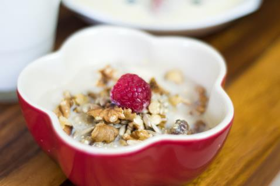

Fruity Millet Raisin Breakfast
Nutritional Facts (per serving)
Calories 368 | Total Fat 24g | Saturated Fat 2.2g | Carbohydrates 34g | Fibre 6g | Protein 9.3g
Serves: 4
Ingredients
- 200g millet
- 400ml water
- 75g raisins
- 1 tsp. cinnamon
- 1 tsp. vanilla extract
- 300ml unsweetened almond milk
- 1 tbsp. agave nectar
- 50g sunflower seeds
- 100g walnuts, chopped roughly
- 100g raspberries
- A few sprigs of fresh mint for garnish
Method
Step 1: Put the millet and the water into a medium size saucepan and bring the mixture to the boil.
Step 2: Add in the raisins, being careful of splashing the hot water, and lower the heat slightly. Put the lid on and simmer for 10 minutes until the water has been absorbed. Turn the heat off and allow the millet to stand for 10 minutes.
Step 3: Mix in 200ml of the almond milk and add the vanilla extract, cinnamon and the agave nectar.
Step 4:Turn the heat on again for a minute or so until the almond milk has been absorbed and the mixture is somewhat creamy.
Step 5: Divide the mixture into 4 bowls and sprinkle with the walnuts, sunflower seeds, raspberries and spring of mint.
Step 6: Serve with a dash of almond milk and enjoy!